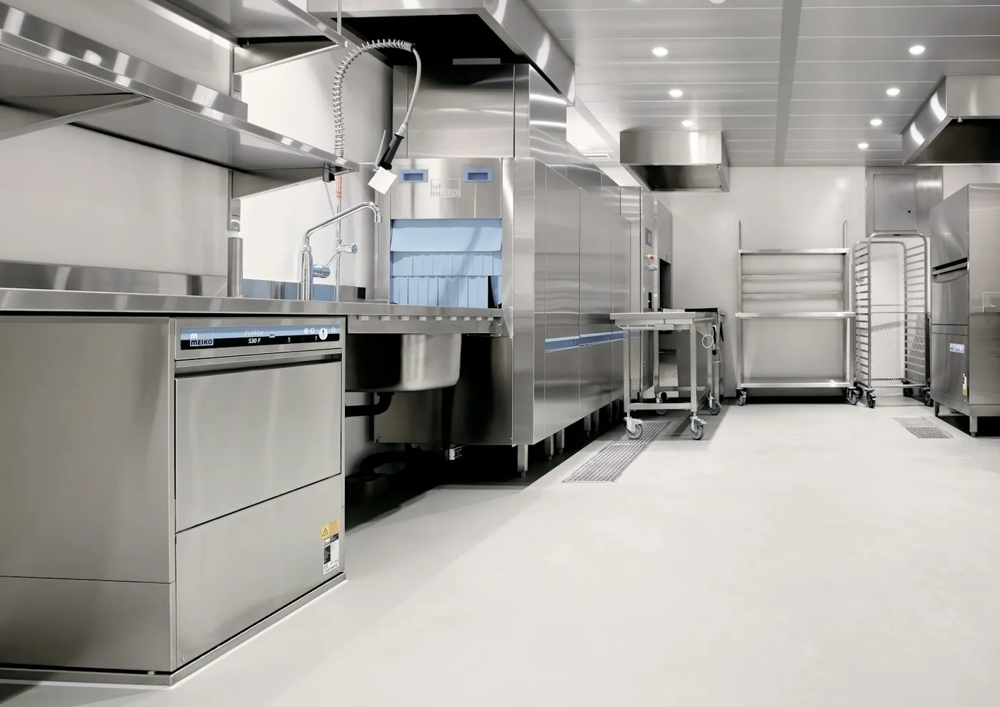

Commercial epoxy flooring in Lake Havasu City for marine service bays, auto shops, restaurant kitchens and warehouses. We install thick, slip-resistant systems and can schedule around your hours so you don’t lose a week of business.
(928) 490-8929 Call Now for a Free Estimate
Commercial jobs use heavier systems than a home garage: thicker epoxy or urethane cement layers, aggregate for slip resistance, and coved edges in kitchens so water can’t sit in the corner. The slab is ground, repaired and tested for moisture first. Large areas can be done in sections so part of the space stays open.
Forklifts, jack stands, hot water, grease and cleaning chemicals hit a commercial floor every day. A thin coating meant for a home garage wears through in traffic lanes and lets fluids into the concrete. Choosing the system for the actual use (and the cleaning products you run) is what makes it last.
Square footage, slab condition, system thickness, slip-resistance needs, cove base in kitchens and after-hours scheduling all affect the price. Call (928) 490-8929 to set up a site visit and a written proposal.
Epoxy systems suit shops, warehouses and showrooms with dry or occasional wet use. Urethane cement handles hot water, thermal shock and constant moisture, which makes it the usual pick for commercial kitchens and food prep. Some buildings use both in different rooms.
Yes. Many businesses book evenings, weekends or a slow week so the floor is done without closing for long. Fast-cure systems can shorten downtime even more.
It can be. We broadcast aggregate into the coating to add texture, and the amount can be matched to the space, more in wet areas and less where carts roll.
A properly built epoxy system resists gasoline, diesel, oil and most shop chemicals, and it cleans up with a degreaser. Spills should still be wiped up rather than left to sit for days.
Call for a site visit and written proposal.
Call (928) 490-8929 for a Free Estimate